Nginx
概述
Nginx是一个高性能的Http和反向代理服务器及电子邮件代理服务器，可实现高效的反向代理和负载均衡，其特点是占有内存少、并发能力强。
主要特点：
更快：单次请求响应更快，高并发可以更快的处理响应；
高拓展性：设计极具扩展性，由多个不同功能、不同层次、不同类型且耦合度极低的模块组成；
高可靠性：很多高流量网站都在核心服务器上大规模使用Nginx；
低内存消耗：一般1万个非活跃的HTTP Keep-Alive连接在Nginx中仅消耗2.5MB内存；
高并发：单机支持10万以上的并发连接；
热部署：master管理进程与worker工作进程的分离设计，使得Nginx能够支持热部署。
使用场景：
- 静态资源服务，通过本地文件系统提供服务；
- 反向代理服务，延伸出包括缓存、负载均衡等；
- API服务，OpenResty。
代理
代理是在服务器和客户端之间假设的一层服务器，代理将接收客户端的请求并将它转发给服务器，然后将服务端的响应转发给客户端。
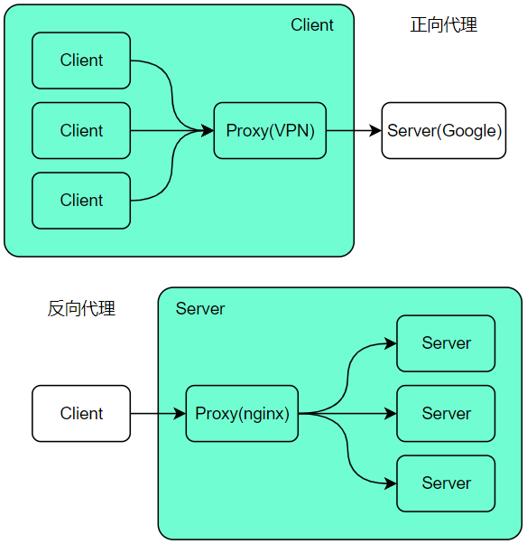正向代理
正向代理（forward）意思是一个位于客户端和原始服务器（origin server）之间的服务器，为了从原始服务器取得内容，客户端向代理发送一个请求并指定目标（原始服务器），然后代理向原始服务器转交请求并将获得的内容返回给客户端。
正向代理是为我们服务的，即为客户端服务的，客户端可以根据正向代理访问到它本身无法访问到的服务器资源。
正向代理对我们是透明的，对服务端是非透明的，即服务端并不知道自己收到的是来自代理的访问还是来自真实客户端的访问。
反向代理
反向代理（Reverse Proxy）方式是指以代理服务器来接受internet上的连接请求，然后将请求转发给内部网络上的服务器，并将从服务器上得到的结果返回给internet上请求连接的客户端，此时代理服务器对外就表现为一个反向代理服务器。
反向代理是为服务端服务的，反向代理可以帮助服务器接收来自客户端的请求，帮助服务器做请求转发、负载均衡等。
反向代理对服务端是透明的，对我们是非透明的，即我们并不知道自己访问的是代理服务器，而服务器知道反向代理在为它服务。
反向代理的优势：
- 隐藏真实服务器；
- 负载均衡便于横向扩充后端动态服务；
- 动静分离，提升系统健壮性。
负载均衡
一般情况下，客户端发送多个请求到服务器，服务器处理请求，其中一部分可能要操作一些资源比如数据库、静态资源等，服务器处理完毕后，再将结果返回给客户端。这种模式对于早期的系统来说，功能要求不复杂，且并发请求相对较少的情况下还能胜任，成本也低。随着信息数量不断增长，访问量和数据量飞速增长，以及系统业务复杂度持续增加，这种做法已无法满足要求，并发量特别大时，服务器容易崩。
很明显这是由于服务器性能的瓶颈造成的问题，除了堆机器之外，最重要的做法就是负载均衡。
请求爆发式增长的情况下，单台机器性能再强劲也无法满足要求了，这个时候集群的概念产生了。单台服务器解决不了的问题，可以使用多台服务器，然后将请求分发到各服务器上。将负载分发到不同的服务器，这就是负载均衡，核心是分摊压力。Nginx实现负载均衡，一般来说指的是将请求转发给服务器集群。
举个具体的例子：晚高峰乘坐地铁的时候，入站口经常会有地铁工作人员用喇叭喊“请走B口，B口人少车空….”，这个工作人员的作用就是负载均衡。
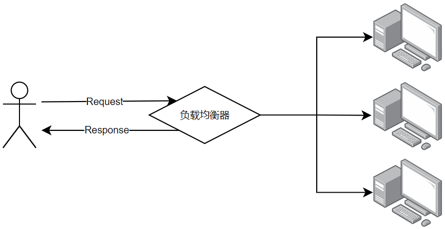Nginx实现负载均衡的策略：
轮询策略：默认情况下采用的策略，将所有客户端请求轮询分配给服务端。这种策略是可以正常工作的，但是如果其中某一台服务器压力太大，出现延迟，会影响所有分配在这台服务器下的用户。最小连接数策略：将请求优先分配给压力较小的服务器，它可以平衡每个队列的长度，避免向压力大的服务器添加更多的请求。最快响应时间策略：优先分配给响应时间最短的服务器。客户端ip绑定策略：来自同一个ip的请求永远只分配一台服务器，有效解决了动态网页存在的session共享问题。ip_hash：如果用户已经访问了某台服务器，当用户再次访问时，会将该请求通过哈希算法，自动定位到该服务器。每个请求按访问ip的hash结果分配，这样每个用户固定访问一台后端服务器，以此来解决session共享问题。
动静分离
动静分离是指在web服务器架构中，将静态页面与动态页面或者静态内容接口和动态内容接口分开不同系统访问的架构设计方法，进而提升整个服务的访问性和可维护性。
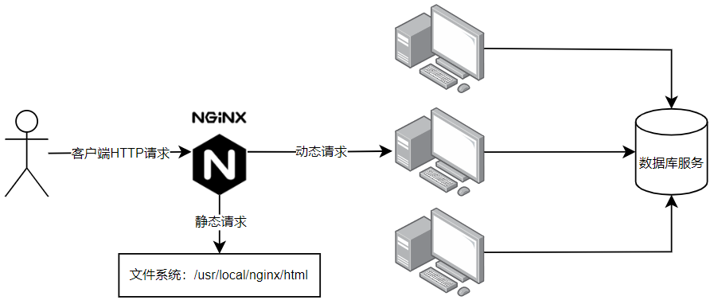一般来说，都需要将动态资源和静态资源分开，由于Nginx的高并发和静态资源缓存等特性，通常将静态资源部署在Nginx上。如果请求的是静态资源，直接到静态资源目录获取资源，如果是动态资源的请求，则利用反向代理的原理，把请求转发给对应后台应用去处理，从而实现动静分离。
使用前后端分离后，可以很大程度提升静态资源的访问速度，即使动态服务不可用，静态资源的访问也不会受到影响。
环境配置
安装
在Linux上安装Nginx
# 进入安装目录 |
主要关注的文件夹有两个：
conf文件夹：用于存放配置文件，包含nginx.conf主配置文件。html文件夹：用于存放静态文件。
常用命令
systemctl系统命令：
# 开机配置 |
Nginx应用程序命令：
cd /usr/local/nginx/sbin |
测试
Nginx启动后访问服务器公网IP，结果如下：
注意：如果连接不上，请检查安全组是否开放80端口，或者服务器防火墙是否允许80端口通过。
# 开启防火墙 |
配置文件
配置文件结构
Nginx配置文件为conf目录下的nginx.conf，该文件包含Nginx服务器的基础配置。
Nginx的典型配置示例：
# main段配置信息 |
说明：
main：全局配置，对全局生效；events：配置影响Nginx服务器与用户的网络连接；http：配置代理、缓存、日志定义等绝大多数功能和第三方模块；server：配置虚拟主机的相关参数，一个http块中可以有多个server块；location：用于配置匹配的uri；upstream：配置后端服务器具体地址，是负载均衡配置不可或缺的部分。
层级结构如下图所示：
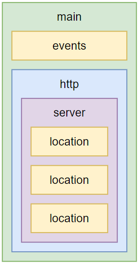配置文件main段核心参数
user
指定运行Nginx的woker子进程的属主和属组，其中组可以不指定。
user USERNAME [GROUP] |
pid
指定运行Nginx的master主进程的pid文件存放路径。
pid /opt/nginx/logs/nginx.pid; # master主进程的的pid存放在nginx.pid文件中 |
worker_rlimit_nofile_number
指定worker子进程可以打开的最大文件句柄数。
worker_rlimit_nofile 20480; # 可以理解成每个worker子进程的最大连接数量 |
worker_rlimit_core
指定worker子进程异常终止后的core文件，用于记录分析问题。
worker_rlimit_core 50M; # 存放大小限制 |
worker_processes_number
指定Nginx启动的worker子进程数量。
worker_processes 4; # 指定具体子进程数量 |
worker_cpu_affinity
将每个worker子进程与CPU物理核心绑定。
worker_cpu_affinity 0001 0010 0100 1000; # 4个物理核心，4个worker子进程 |
将每个worker子进程与特定CPU物理核心绑定，优势在于避免同一个worker子进程在不同的CPU核心上切换，导致缓存失效，降低性能，但其并不能真正的避免进程切换。
worker_priority
指定worker子进程的nice值，以调整运行Nginx的优先级，通常设定为负值，以优先调用Nginx 。
worker_priority -10; # 120-10=110，110就是最终的优先级 |
Linux默认进程的优先级值为120，值越小越优先。nice范围为-20到+19。
注：应用的默认优先级值是
120加上nice值等于它最终的值，这个值越小，优先级越高。
worker_shutdown_timeout
指定worker子进程优雅退出时的超时时间。
worker_shutdown_timeout 5s; |
timer_resolution
worker子进程内部使用的计时器精度，调整时间间隔越大，系统调用越少，有利于性能提升；反之，系统调用越多，性能下降。
timer_resolution 100ms; |
在Linux系统中，用户需要获取计时器时需要向操作系统内核发送请求，有请求就必然会有开销，因此这个间隔越大开销就越小。
daemon
指定Nginx的运行方式，前台还是后台，前台用于调试，后台用于生产。
daemon off; # 默认是on，后台运行模式 |
配置文件events段核心参数
use
Nginx使用何种事件驱动模型。
use method; # 不推荐配置它，让nginx自己选择 |
worker_connections
worker子进程能够处理的最大并发连接数。
worker_connections 1024; # 每个子进程的最大连接数为1024 |
accept_mutex
是否打开负载均衡互斥锁。
accept_mutex on; # 默认是off关闭的，这里推荐打开 |
server_name指令
指定虚拟主机域名。
server_name name1 name2 name3 |
域名匹配的四种写法：
精确匹配：
server_name www.nginx.com;左侧通配：
server_name *.nginx.com;右侧通配：
server_name www.nginx.*;正则匹配：
server_name ~^www\.nginx\.*$。
匹配优先级：精确匹配 > 左侧通配符匹配 > 右侧通配符匹配 > 正则表达式匹配。
root
指定静态资源目录位置，它可以写在http、server、location等配置中。
root path |
注：
root会将定义路径与URI叠加，而alias只取定义路径。
alias
它也是指定静态资源目录位置，但只能写在location中。
location /image { |
注：使用
alias时末尾是否需要添加/取决于location中的URI末尾是否有/，若URI末尾存在/，则alias末尾需要添加/，否则可省略。
location
配置路径。
location [ = | ~ | ~* | ^~ ] uri { |
匹配规则：
=：精确匹配；~：正则匹配，区分大小写；~*：正则匹配，不区分大小写；^~：匹配到即停止搜索。
匹配优先级：= > ^~ > ~ > ~* > 不带任何字符。
实例
server { |
location URI结尾带不带/
如果URL的结构为http://www.nginx-test.com/homepage/。尾部如果缺少/将导致重定向，因为根据约定，URL尾部的/表示目录，没有/表示文件。所以访问/homepage/时，服务器会自动去该目录下找对应的默认文件。如果访问/homepage的话，服务器会先去找homepage文件，找不到的话会将homepage当成目录，重定向到/homepage/，去该目录下找默认文件。
URI
URI，统一资源标志符（Uniform Resource Identifier），表示的是
Web上每一种可用的资源，如HTML文档、图像、视频片段、程序等都由一个URI进行标识的。URI通常由三部分组成：
- 资源的命名机制
- 存放资源的主机名
- 资源自身的名称
注意：这只是一般URI资源的命名方式，只要是可以唯一标识资源的都被称为URI，上面三条合在一起是URI的充分不必要条件。
URI举例：
https://www.nginx-test.com/img/1.jpg解释：
- 这是一个可以通过
https协议访问的资源；- 位于主机
www.nginx-test.com上；- 通过
/img/1.jpg可以对该资源进行唯一标识（注意，这个不一定是完整的路径）。注意：以上三点只不过是对实例的解释，以上三点并不是URI的必要条件，URI只是一种概念，怎样实现无所谓，只要它唯一标识一个资源就可以了。
URL
URL，统一资源定位符（Uniform Resource Locator）。通俗地说，URL是
Internet上描述信息资源的字符串，主要用在各种www客户程序和服务器程序上。采用URL可以用一种统一的格式来描述各种信息资源，包括文件、服务器的地址和目录等。URL是URI概念的一种实现方式。URL的一般格式为（带方括号
[]的为可选项）：
scheme # 有我们很熟悉的http、https、ftp以及著名的ed2k、迅雷的thunder等
host # HTTP服务器的IP地址或者域名
port# # HTTP服务器的默认端口是80，这种情况下端口号可以省略。如果使用了别的端口，必须指明，例如tomcat的默认端口是8080 -> http://localhost:8080/
path # 访问资源的路径
url-params # 所带参数
query-string # 发送给http服务器的数据
anchor # 锚点定位区别
从上面的例子来看，可能觉得URI和URL是相同的概念，其实并不是，URI和URL都定义了资源是什么，但URL还定义了该如何访问资源。URL是一种具体的URI，它是URI的一个子集，它不仅唯一标识资源，而且还提供了定位该资源的信息。URI是一种语义上的抽象概念，可以是绝对的，也可以是相对的，而URL则必须提供足够的信息来定位，是绝对的。
return
停止处理请求，直接返回响应码或重定向到其他URL。执行return指令后，location中后续指令将不会被执行。
return code [text]; |
rewrite
根据指定正则表达式匹配规则，重写URL。
语法：rewrite 正则表达式 要替换的内容 [flag]; |
flag可选值的含义：
last：重写后的URL发起新请求，再次进入server段，重试location中的匹配；break：直接使用重写后的URL，不再匹配其它location中语句；redirect：返回302临时重定向；permanent：返回301永久重定向。
实例：
server{ |
按照这个配置进行分析：
- 当访问
nginx-test.com/search时，会自动帮我们重定向到https://www.baidu.com。 - 当访问
nginx-test.com/images/1.jpg时，第一步重写URL为nginx-test.com/pics/1.jpg，找到pics的location，继续重写URL为nginx-test.com/photos/1.jpg，找到/photos的location后，去html/photos目录下寻找1.jpg静态资源。
if指令
语法：if (condition) {...} |
condition判断条件：
$variable：仅为变量时，值为空或以0开头字符串都会被当做false处理；=或!=：相等或不等；~：正则匹配；! ~：非正则匹配；~*：正则匹配，不区分大小写；-f或! -f：检测文件存在或不存在；-d或! -d：检测目录存在或不存在；-e或! -e：检测文件、目录、符号链接等存在或不存在；-x或! -x：检测文件可以执行或不可执行。
实例：
server { |
结果：当访问localhost:8080/images/时，会进入if判断里面执行rewrite命令。
autoindex
用户请求以/结尾时，列出目录结构，可以用于快速搭建静态资源下载网站。
实例：
server { |
结果：当访问nginx-test.com/download/时，会把服务器/opt/source/download/路径下的文件展示出来。
实战配置
在配置反向代理和负载均衡等功能之前，有两个核心模块是必须掌握的，这两个模块可以说是Nginx应用配置中的核心，它们分别是：upstream、proxy_pass。
upstream
用于定义上游服务器（指的是后台提供的应用服务器）的相关信息。
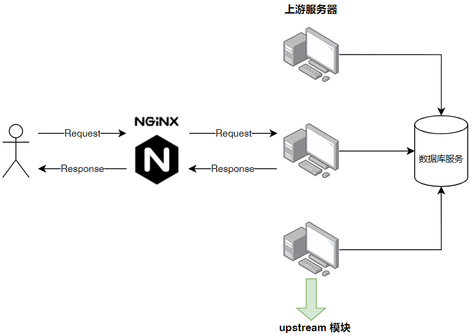语法：upstream name { |
在upstream内可使用的指令：
server：定义上游服务器地址；zone：定义共享内存，用于跨worker子进程；keepalive：对上游服务启用长连接；keepalive_requests：一个长连接最多请求HTTP的个数；keepalive_timeout：空闲情形下，一个长连接的超时时长；hash：哈希负载均衡算法；ip_hash：依据IP进行哈希计算的负载均衡算法；least_conn：最少连接数负载均衡算法；least_time：最短响应时间负载均衡算法；random：随机负载均衡算法。
server
定义上游服务器地址。
语法：server address [parameters] |
parameters可选值：
weight=number：权重值，默认为1；max_conns=number：上游服务器的最大并发连接数；fail_timeout=time：服务器不可用的判定时间；max_fails=numer：服务器不可用的检查次数；backup：备份服务器，仅当其他服务器都不可用时才会启用；down：标记服务器长期不可用，离线维护。
keepalive
限制每个worker子进程与上游服务器空闲长连接的最大数量。
keepalive connections; |
keepalive_requests
单个长连接可以处理的最多HTTP请求个数。
语法：keepalive_requests number; |
keepalive_timeout
空闲长连接的最长保持时间。
语法：keepalive_timeout time; |
配置实例
upstream back_end { |
proxy_pass
用于配置代理服务器。
语法：proxy_pass URL; |
URL参数原则：
URL必须以http或https开头；URL中可以携带变量；URL中是否带URI，会直接影响发往上游请求的URL。
接下来让我们来看看两种常见的URL用法：
proxy_pass http://192.168.100.33:8081proxy_pass http://192.168.100.33:8081/
这两种用法的区别就是带/和不带/，在配置代理时区别如下：
不带/意味着Nginx不会修改用户URL，而是直接传给上游的应用服务器；带/意味着Nginx会修改用户URL，修改方法是将location后的URI从用户URL中删除。
不带/的用法
location /bbs/ { |
分析：
- 用户请求
URL：/bbs/abc/test.html - 请求到达Nginx的
URL：/bbs/abc/test.html - 请求到达上游应用服务器的
URL：/bbs/abc/test.html
带/的用法
location /bbs/{ |
分析：
用户请求
URL：/bbs/abc/test.html请求到达Nginx的
URL：/bbs/abc/test.html请求到达上游应用服务器的
URL：abc/test.html
并没有拼接上/bbs/，这点和root与alias之间的区别是保持一致的。
配置反向代理
典型场景：反向代理（Reverse Proxy）方式是指以代理服务器来接受internet上的连接请求，然后将请求转发给内部网络上的服务器，并将从服务器上得到的结果返回给internet上请求连接的客户端，此时代理服务器对外就表现为一个反向代理服务器。
Nginx主要作为应用接入层，并为后端的tomcat等服务实现反向代理。
实例1
在
/usr/local/nginx/conf/下创建conf.d目录。cd /usr/local/nginx/conf/
mkdir conf.d修改Nginx默认配置
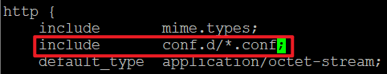nginx.conf，新增内容如下：vim /usr/local/nginx/conf/nginx.conf
# 新增内容
include conf.d/*.conf;进入
conf.d目录创建reverse_proxy.conf文件。cd conf.d
vim reverse_proxy.conf文件内容如下：
server {
listen 80;
server_name reverse_proxy.com;
location / {
proxy_pass https://www.baidu.com;
proxy_set_header Host $proxy_host;
#proxy_set_header Host $host;
}
}重新加载Nginx配置文件。
/usr/local/nginx/sbin/nginx -s reload
访问
服务器公网IP，此时直接跳转到百度页面。
实例2
准备两台服务器，公网IP分别是1.12.36.60、121.43.178.226
把1.12.36.60服务器作为上游服务器
在
/usr/local/nginx/conf/下创建conf.d目录。cd /usr/local/nginx/conf/
mkdir conf.d修改Nginx默认配置
nginx.conf，新增内容如下：vim /usr/local/nginx/conf/nginx.conf
# 新增内容
include conf.d/*.conf;进入
conf.d目录创建proxy.conf文件。cd conf.d
vim proxy.conf文件内容如下：
server{
listen 8080;
server_name proxy.com;
location /proxy/ {
root html/proxy;
index index.html;
}
}在
/usr/local/nginx/html/下创建proxy目录。cd /usr/local/nginx/html/
mkdir proxy进入
proxy目录创建index.html文件。cd proxy
vim index.html文件内容如下：
<h1> 1.12.36.60 proxy html </h1>
配置完成后重启
Nginx服务器。访问
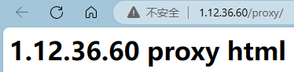http://1.12.36.60/proxy/，结果如下：
把121.43.178.226服务器作为代理服务器
在
/usr/local/nginx/conf/下创建conf.d目录。cd /usr/local/nginx/conf/
mkdir conf.d修改Nginx默认配置
nginx.conf，新增内容如下：vim /usr/local/nginx/conf/nginx.conf
# 新增内容
include conf.d/*.conf;进入
conf.d目录创建proxy.conf文件。cd conf.d
vim proxy.conf文件内容如下：
upstream back_end {
server 1.12.36.60 weight=2 max_conns=1000 fail_timeout=10s max_fails=3;
keepalive 32;
keepalive_requests 80;
keepalive_timeout 20s;
}
server {
listen 80;
server_name proxy.com;
location /proxy {
proxy_pass http://back_end/proxy;
}
}配置完成后重启
Nginx服务器。访问
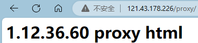http://121.43.178.226/proxy/，结果如下：
分析
当访问
http://121.43.178.226/proxy/时通过upstream的配置找到1.12.36.60；因此访问地址变为
http://1.12.36.60/proxy/；连接到
1.12.36.60服务器，找到提供的server；通过
server找到html/proxy/index.html资源，最终展示出来。
配置负载均衡
作用：Nginx会按照相应的策略将客户端发来的请求转发至不同的应用服务器上，减轻单台服务器的压力，提高服务器的并发量。
Nginx负载均衡策略有6种：
轮询：默认策略，Nginx自带策略，它是
upstream模块默认的负载均衡默认策略，会将每个请求按时间顺序分配到不同的后端服务器。weight：权重，Nginx自带策略，指定轮询的访问几率，用于后端服务器性能不均时调整访问比例。ip_hash：依据IP分配，Nginx自带策略，指定负载均衡器按照基于客户端IP的分配方式，这个方法确保了相同客户端的请求一直发送到相同的服务器，可以解决session不能跨服务器的问题。least_conn：最少连接，Nginx自带策略，把请求转发给连接数较少的后端服务器。fair：第三方，按照服务器端的响应时间来分配请求，响应时间短的优先分配。url_hash：第三方，该策略按访问URL的hash结果来分配请求，使每个URL定向到同一台后端服务器，需要配合缓存用。
实例
把1.12.36.60服务器作为上游服务器，做如下配置：
# /usr/loca/nginx/conf/conf.d/balance.conf |
配置完成后重启Nginx服务器。
把121.43.178.226服务器作为代理服务器，做如下配置：
# /usr/local/nginx/conf/conf.d/balance.conf |
配置完成后重启Nginx服务器。
执行curl http://121.43.178.226/balance/命令，结果如下：
可以看出负载均衡的配置已经生效了，每次给我们分发的上游服务器都不一样。这时只是通过简单的轮询策略进行上游服务器分发，接下来再来了解下Nginx的其它分发策略。
hash算法
通过制定关键字作为hash key，基于hash算法映射到特定的上游服务器中。关键字可以包含有变量、字符串。
upstream demo_server { |
hash $request_uri表示使用request_uri变量作为hash的key值，只要访问的uri保持不变，就会一直分发给同一台服务器。
ip_hash
根据客户端的请求IP进行判断，只要IP地址不变，就永远分配到同一台主机，它可以有效解决后台服务器session保持的问题。
upstream demo_server { |
最小连接数算法
各个worker子进程通过读取共享内存的数据，来获取后端服务器的信息，挑选一台当前已建立连接数最少的服务器进行分配请求。
语法：least_conn; |
示例：
upstream demo_server { |
权重
upstream demo_server { |
灰度发布
在一般情况下，升级服务器端应用，需要将应用源码或程序包上传到服务器，然后停止掉老版本服务，再启动新版本。但是这种简单的发布方式存在两个问题，一方面，在新版本升级过程中，服务是暂时中断的，另一方面，如果新版本有BUG，升级失败，回滚起来也非常麻烦，容易造成更长时间的服务不可用。下面介绍一种解决策略——灰度发布。
灰度发布也叫金丝雀发布，起源是，矿井工人发现，金丝雀对瓦斯气体很敏感，矿工会在下井之前，先放一只金丝雀到井中，如果金丝雀不叫了，就代表瓦斯浓度高。
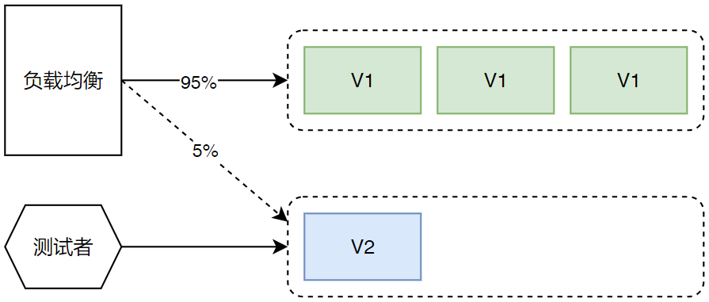在灰度发布开始后，先启动一个新版本应用，但是并不直接将流量切过来，而是测试人员对新版本进行线上测试，启动的这个新版本应用，就是我们的金丝雀。如果没有问题，那么可以将少量的用户流量导入到新版本上，然后再对新版本做运行状态观察，收集各种运行时数据，如果此时对新旧版本做各种数据对比，就是所谓的A/B测试。
当确认新版本运行良好后，再逐步将更多的流量导入到新版本上，在此期间，还可以不断地调整新旧两个版本的运行服务器副本数量，以使得新版本能够承受越来越大的流量压力，直到将100%的流量都切换到新版本上，最后关闭剩下的老版本服务，完成灰度发布。
如果在灰度发布过程中（灰度期）发现了新版本有问题，就应该立即将流量切回老版本上，这样可以将负面影响控制在最小范围内。
使用场景：利用灰度发布稳定低风险地实现迁移后业务验证以及业务割接。
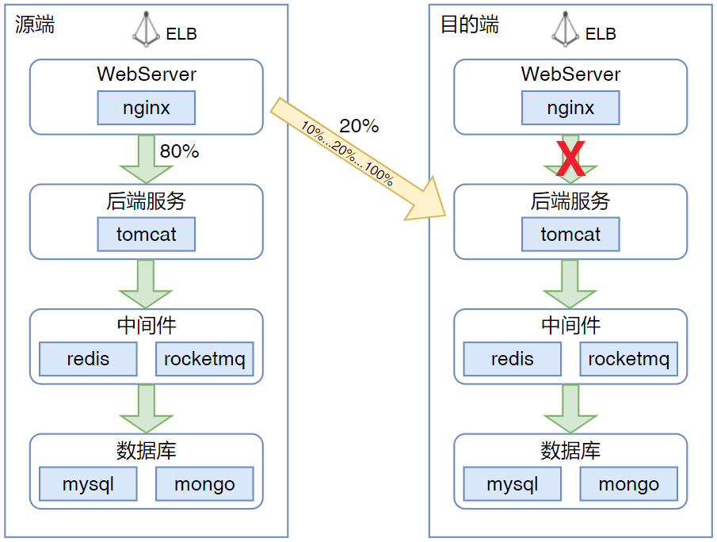配置缓存
缓存可以非常有效的提升性能，因此不论是客户端（浏览器），还是代理服务器（Nginx），乃至上游服务器都多少会涉及到缓存。
proxy_cache
存储一些之前被访问过、而且可能将要被再次访问的资源，使用户可以直接从代理服务器获得，从而减少上游服务器的压力，加快整体访问速度。
语法：proxy_cache zone | off ; # zone 是共享内存的名称 |
proxy_cache_path
设置缓存文件的存放路径。
语法：proxy_cache_path path [level=levels] ... # 可选参数省略，下面会详细列举 |
参数含义：
path：缓存文件的存放路径。level：path的目录层级。keys_zone：设置共享内存。inactive：在指定时间内没有被访问，缓存会被清理，默认10分钟。
proxy_cache_key
设置缓存文件的key。
语法：proxy_cache_key |
proxy_cache_valid
配置什么状态码可以被缓存，以及缓存时长。
语法：proxy_cache_valid [code...] time; |
proxy_no_cache
定义条件，如果至少一个字符串条件非空而且非0，则该响应不会被缓存。
语法：proxy_no_cache string; |
proxy_cache_bypass
定义条件，如果至少一个字符串条件非空而且非0，Nginx就不会从缓存中获取响应。
语法：proxy_cache_bypass string; |
upstream_cache_status
它存储了缓存是否命中的信息，会设置在响应头信息中，在调试中非常有用。
MISS: 未命中缓存 |
配置实例
把1.12.36.60服务器作为上游服务器，做如下配置：
# /usr/local/nginx/conf/conf.d/cache.conf |
配置完成后重启Nginx服务器。
把121.43.178.226服务器作为代理服务器，做如下配置：
# /usr/local/nginx/conf/conf.d/cache.conf |
配置完成后重启Nginx服务器。
测试：
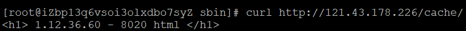此时可以在/usr/local/nginx/cache_temp路径下找到相应的缓存文件。
对于一些实时性要求非常高的页面或数据来说，不应该设置缓存。下面来看看如何配置不缓存的内容：
server {
listen 80;
server_name cache.com;
# URI中后缀为.txt或.text的设置变量值为"no cache"
if ($request_uri ~ \.(txt|text)$) {
set $cache_name "no cache";
}
location /cache/ {
proxy_no_cache $cache_name; # 判断该变量是否有值，如果有值则不进行缓存，如果没有值则进行缓存
proxy_cache cache_zone; # 设置缓存内存
proxy_cache_valid 200 5m; # 缓存状态为200的请求，缓存时长为5分钟
proxy_cache_key $request_uri; # 缓存文件的key为请求的URI
add_header Nginx-Cache-Status $upstream_cache_status; # 把缓存状态设置为头部信息，响应给客户端
proxy_pass http://cache_server/; # 代理转发
}
}
HTTPS
HTTPS工作流程
客户端（浏览器）访问
https://www.baidu.com；百度服务器返回
HTTPS使用的CA证书；浏览器验证
CA证书是否为合法证书；验证通过，证书合法，生成一串随机数并使用公钥（证书中提供的）进行加密；
发送公钥加密后的随机数给百度服务器；
百度服务器拿到密文，通过私钥进行解密，获取到随机数（公钥加密，私钥解密，反之也可以）；
百度服务器把要发送给浏览器的内容，使用随机数进行加密后传输给浏览器；
此时浏览器可以使用随机数进行解密，获取到服务器的真实传输内容。
这就是HTTPS的基本运作原理，对称加密和非对称加密配合使用，保证传输内容的安全性。
配置证书
下载证书的压缩文件，里面有个Nginx文件夹，把xxx.crt和xxx.key文件拷贝到服务器目录，再进行如下配置：
server { |
如此配置后就能正常访问HTTPS版的网站了。
配置跨域CORS
跨域的定义
同源策略限制了从同一个源加载的文档或脚本如何与来自另一个源的资源进行交互，这是一个用于隔离潜在恶意文件的重要安全机制，通常不允许不同源间的读操作。
同源的定义
如果两个页面的协议、端口（如果有指定）和域名都相同，则两个页面具有相同的源。
下面给出了与URLhttp://store.company.com/dir/page.html的源进行对比的示例：
http://store.company.com/dir2/other.html # 同源 |
不同源会有如下限制：
Web数据层面：同源策略限制了不同源的站点读取当前站点的Cookie、IndexDB、LocalStorage等数据。DOM层面：同源策略限制了来自不同源的JavaScript脚本对当前DOM对象读和写的操作。- 网络层面：同源策略限制了通过
XMLHttpRequest等方式将站点的数据发送给不同源的站点。
Nginx解决跨域的原理
例如：
- 前端服务的域名为：
fe.server.com - 后端服务的域名为：
dev.server.com
现在从fe.server.com对dev.server.com发起请求一定会出现跨域，此时我们只需启动一个Nginx服务器，将server_name设置为fe.server.com，然后设置相应的location以拦截前端需要跨域的请求，最后将请求代理回dev.server.com，具体配置如下：
server { |
这样可以完美绕过浏览器的同源策略：fe.server.com访问Nginx的fe.server.com属于同源访问，而Nginx对服务端转发的请求不会触发浏览器的同源策略。
配置开启gzip压缩
gzip是规定的三种标准HTTP压缩格式之一，目前绝大多数的网站都在使用gzip传输HTML、CSS、JavaScript等资源文件。
对于文本文件，gzip的效果非常明显，开启后传输所需流量大约会降至1/4 ~ 1/3。值得注意的是，并不是每个浏览器都支持gzip的，那么如何知道客户端是否支持gzip呢——客户端通过请求头中的Accept-Encoding来标识对压缩的支持。
启用gzip同时需要客户端和服务端的支持，如果客户端支持gzip的解析，那么只要服务端能够返回gzip的文件就可以启用gzip了，我们可以通过Nginx的配置来让服务端支持gzip。下面的respone中content-encoding:gzip表明服务端开启了gzip的压缩方式。
在/usr/local/nginx/conf/conf.d/文件夹中新建配置文件gzip.conf，配置如下：
# 默认 off，是否开启 gzip |
配置
gzip_static后报错：
nginx: [emerg] unknown directive "gzip_static" in /usr/local/nginx/conf/conf.d/web.conf:2解决方法：
[root@iZbp13q6vsoi3olxdbo7syZ sbin]# ./nginx -V
nginx version: nginx/1.15.8
built by gcc 9.3.1 20200408 (Red Hat 9.3.1-2) (GCC)
built with OpenSSL 1.0.2k-fips 26 Jan 2017
TLS SNI support enabled
configure arguments: --with-http_ssl_module
# 通过以上信息中的configure arguments看出我们没有配置该信息，这时需要我们进入原来nginx解压的目录中，进行配置并重新安装。
[root@iZbp13q6vsoi3olxdbo7syZ sbin]# cd /usr/local/nginx-1.15.8
[root@iZbp13q6vsoi3olxdbo7syZ nginx-1.15.8]# ./configure --with-http_ssl_module --with-http_gzip_static_module
[root@iZbp13q6vsoi3olxdbo7syZ nginx-1.15.8]# make && make install
也可以通过前端构建工具例如webpack、rollup等在打生产包时就做好gzip压缩，然后放到Nginx服务器中，这样可以减少服务器的开销，加快访问速度。
健康检查
前端使用Nginx做反向代理，如果后端服务器宕掉的话，Nginx是不能把这台real server踢出upstream的，所以还会有请求转发到后端的这台real server上面去，虽然Nginx可以在localtion中启用proxy_next_upstream来解决返回给用户的错误页面，但这个还是会把请求转发给这台服务器的，然后再转发给别的服务器，这样就浪费了一次转发。本次使用淘宝技术团队开发的Nginx模快nginx_upstream_check_module来检测后方real server的健康状态，如果后端服务器不可用，则所有的请求不转发到这台服务器。
nginx_upstream_check_module模块专门提供负载均衡器内节点的健康检查的外部模块，通过它可以用来检测后端real server的健康状态。如果后端real server不可用，则后面的请求就不会转发到该节点上，并持续检查节点的状态。
Nginx后端健康检查
Nginx自带健康检查的缺陷：
- Nginx只有访问时才发起对后端节点的探测。
- 如果本次请求中节点正好出现故障，Nginx依然将请求转交给故障节点，然后再转交给健康节点进行处理。所以不会影响到这次请求的正常进行，但是会影响效率，因为多了一次转发。
- 自带模块无法做到预警。
- 被动健康检查。
使用第三访模块nginx_upstream_check_module：
- 区别于Nginx自带的非主动式的心跳检测，
nginx_upstream_check_module自带一个提供主动式后端服务器心跳检测模块。 - 若健康检查包类型为
http，在开启健康检查功能后，Nginx会根据设置的间隔向指定的后端服务器端口发送健康检查包，并根据期望的http回复状态码来判断服务是否健康。 - 后端真实节点不可用，则请求不会转发到故障节点。
- 故障节点恢复后，请求正常转发。
Nginx被动检查
Nginx自带健康检查模块：ngx_http_upstream_module，可以做到基本的健康检查，配置如下：
upstream health_check { |
缺点：Nginx只有访问时才发起对后端节点的探测。如果本次请求中节点正好出现故障，Nginx依然将请求转交给故障节点，然后再转交给健康节点进行处理。所以不会影响到这次请求的正常进行，但是会影响效率，因为多了一次转发。
Nginx主动检查
Nignx定时主动地去ping后端的服务列表，当发现某服务出现异常时，把该服务从健康列表中移除，当发现某服务恢复时，又能够将该服务加回健康列表中。
安装nginx_upstream_check_module模块
cd /usr/local/ |
使用
Nginx提供了三种HTTP服务健康检查方案供用户选择：
TCP层默认检查方案：定时与后端服务建立一条tcp链接，链接建立成功则认为服务节点是健康的。
HTTP层默认检查方案：
TCP层检查有一定的局限性：
- 很多HTTP服务是带状态的，端口处于listen状态并不能代表服务已经完成预热。
- 不能真实反映服务内部处理逻辑是否产生拥堵。
这时可以选择http层健康检查，会向服务发送一个http请求GET / HTTP/1.0\r\n\r\n，返回状态是2xx或3xx时认为后端服务正常。
自定义方案：nginx_upstream_check_module模块。
可根据下文描述自定义检查方案。
示例
upstream health_check1 { |
配置参数详解
check：用于打开后端服务器的健康检查功能Syntax: check interval=milliseconds [fall=count] [rise=count] [timeout=milliseconds] [default_down=true|false] [type=tcp|http|ssl_hello|mysql|ajp] [port=check_port]
Default: 如果没有配置参数，默认值为：interval=30000 fall=5 rise=2 timeout=1000 default_down=true type=tcp
Context: upstreaminterval：向后端发送的健康检查包的间隔，单位为毫秒。fall（fall_count）：如果连续失败次数达到fall_count，服务器就被认为是down。rise（rise_count）：如果连续成功次数达到rise_count，服务器就被认为是up。timeout：后端健康请求的超时时间。default_down：设定初始时服务器的状态，如果是true，就说明默认是down的，如果是false，就是up的。默认值为true，也就是一开始服务器认为是不可用，要等健康检查包达到一定成功次数以后才会被认为是健康的。type：健康检查包的类型，现在支持以下多种类型tcp：简单的tcp连接，如果连接成功，就说明后端正常。ssl_hello：发送一个初始的SSL hello包并接受服务器的SSL hello包。http：发送http请求，通过后端的回复包状态来判断后端是否存活。mysql：与mysql服务器进行连接，通过接收服务器的greeting包来判断后端是否存活。ajp：向后端发送AJP协议的Cping包，通过接收Cpong包来判断后端是否存活。port：指定后端服务器的检查端口。可以指定不同于真实服务的后端服务器端口，比如后端提供的是443端口的应用，我们可以去检查80端口的状态来判断后端健康状况。默认为0，表示跟后端提供真实服务的端口一致。
check_keepalive_requests：配置一个连接发送的请求数，其默认值为1，表示完成1次请求后关闭连接。Syntax: check_keepalive_requests request_num
Default: 1
Context: upstreamcheck_http_send：配置http健康检查包发送的请求内容。为了减少传输数据量，推荐采用HEAD方法。当采用长连接进行健康检查时，需在该指令中添加
keep-alive请求头，如：HEAD / HTTP/1.1\r\nConnection: keep-alive\r\n\r\n。同时，在采用
GET方法的情况下，请求uri的size不宜过大，确保可以在1个interval内传输完成，否则会被健康检查模块视为后端服务器或网络异常。Syntax: check_http_send http_packet
Default: "GET / HTTP/1.0\r\n\r\n"
Context: upstreamcheck_http_expect_alive：指定http回复的成功状态，默认认为2XX和3XX的状态是健康的。Syntax: check_http_expect_alive [ http_2xx | http_3xx | http_4xx | http_5xx ]
Default: http_2xx | http_3xx
Context: upstreamcheck_shm_size：所有的后端服务器健康检查状态都存于共享内存中，该参数用于设置共享内存的大小，默认为1M。Syntax: check_shm_size size
Default: 1M
Context: httpcheck_status：显示服务器的健康状态页面。Syntax: check_status [html|csv|json]
Default: check_status html
Context: location可以配置显示页面的格式，支持的格式有：
html、csv、json。默认类型为html。也可以通过请求的参数来指定格式，假设
/status为状态页面的URI，format参数改变页面的格式如下：/status?format=html
/status?format=csv
/status?format=json同时也可以通过
status参数来获取相同服务器状态的列表，例如：/status?format=html&status=down
/status?format=csv&status=up下面是一个
html状态页面的例子（server number是后端服务器的数量，generation是Nginx reload的次数。Index是服务器的索引，Upstream是配置中upstream的名称，Name是服务器IP，Status是服务器的状态，Rise是服务器连续检查成功的次数，Fall是连续检查失败的次数，Check type是检查的方式，Check port是后端专门为健康检查设置的端口）：
http://www.w3.org/TR/xhtml1/DTD/xhtml1-strict.dtd">
http://www.w3.org/1999/xhtml">
background-color:white" cellspacing="0" cellpadding="3" border="1">
#C0C0C0">下面是
csv格式页面的例子：0,backend,106.187.48.116:80,up,46,0,http,80
下面是
json格式页面的例子：{"servers": {
"total": 1,
"generation": 3,
"server": [
{"index": 0, "upstream": "backend", "name": "106.187.48.116:80", "status": "up", "rise": 58, "fall": 0, "type": "http", "port": 80}
]
}}
状态测试
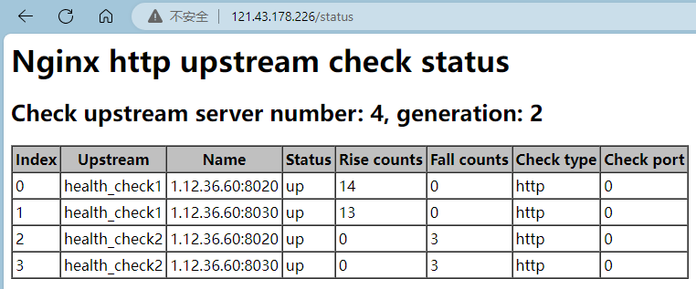Nginx架构
进程结构
多进程结构Nginx的进程模型图：
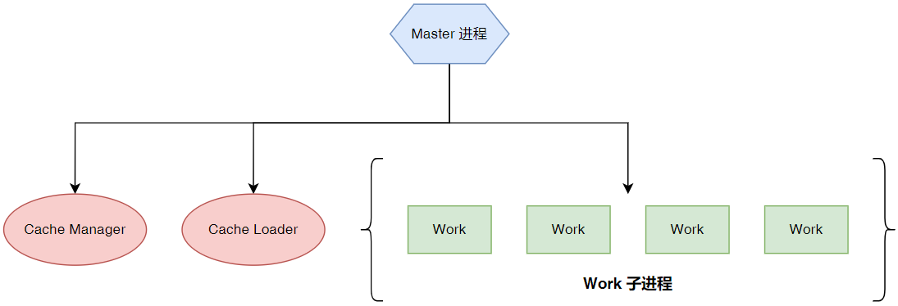多进程中Nginx进程架构如上图所示，会有一个父进程（Master Process），它会有很多子进程（Child Processes）。
Master Process用来管理子进程，其本身并不真正处理用户请求。- 某个子进程宕掉，它会向
Master进程发送一条消息，表明自己不可用了，此时Master进程会新起一个子进程。 - 某个配置文件被修改后
Master进程会去通知work进程获取新的配置信息，也就是我们所说的热部署。
- 某个子进程宕掉，它会向
- 子进程间通过共享内存的方式进行通信。
配置文件重载原理
reload重载配置文件的流程：
- 向
master进程发送HUP信号（reload命令）； master进程检查配置语法是否正确；master进程打开监听端口；master进程使用新的配置文件启动新的worker子进程；master进程向老的worker子进程发送QUIT信号；- 老的
worker进程关闭监听句柄，处理完当前连接后关闭进程； - 整个过程
Nginx始终处于平稳运行中，实现了平滑升级，用户无感知。
Nginx模块化管理机制
Nginx内部结构是由核心部分和一系列的功能模块所组成，这样划分是为了使得每个模块的功能相对简单，便于开发，同时也便于对系统进行功能扩展。Nginx的模块是互相独立的，低耦合高内聚。
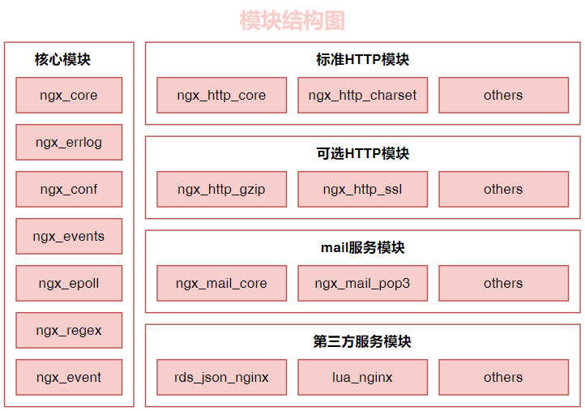